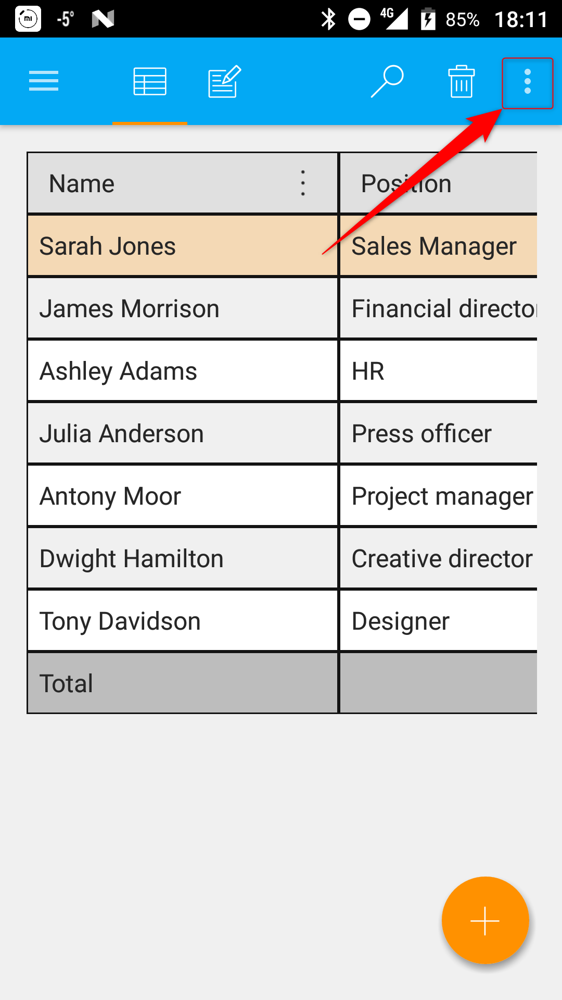
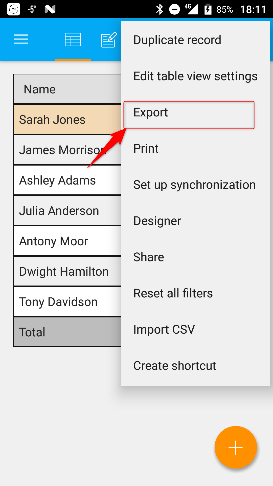
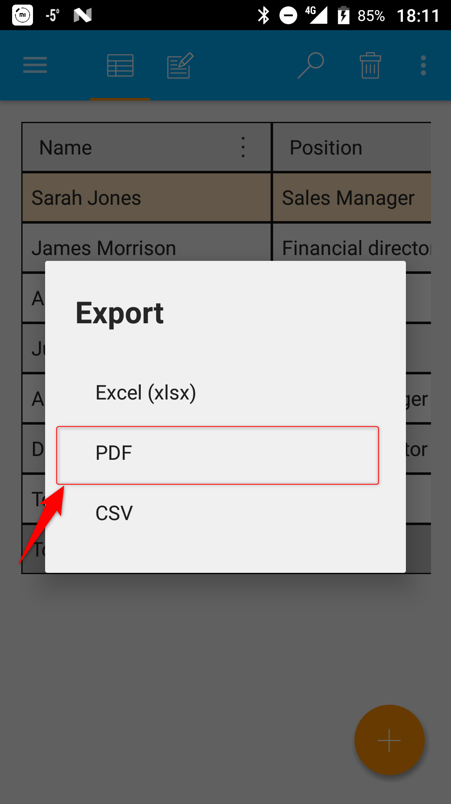
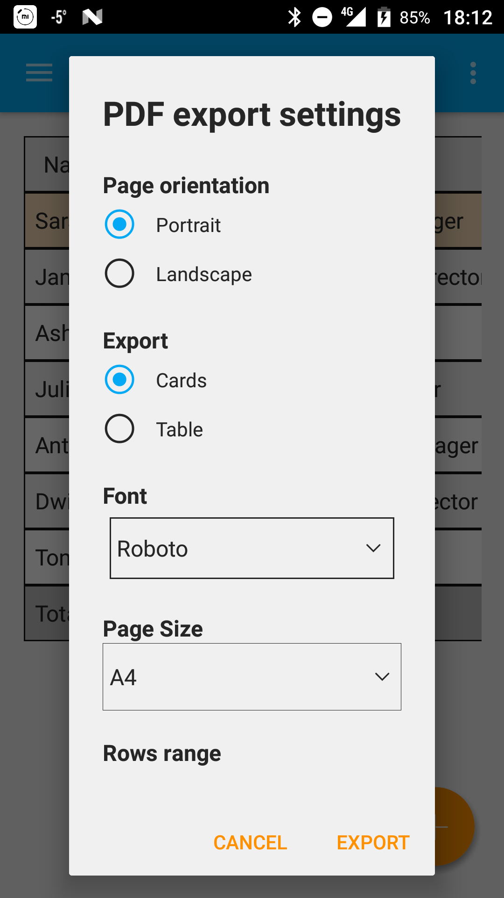
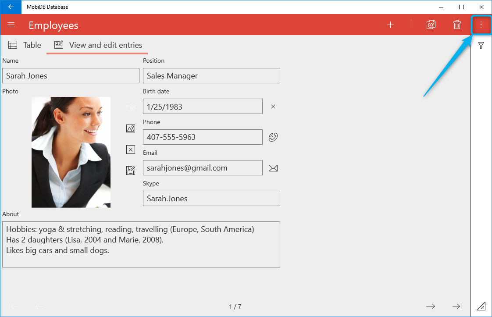
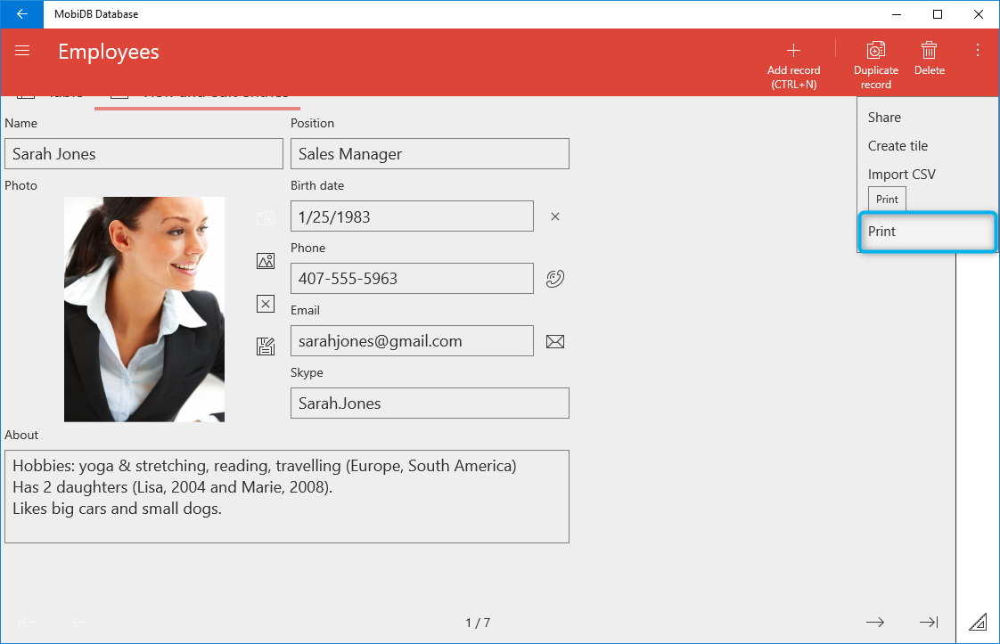
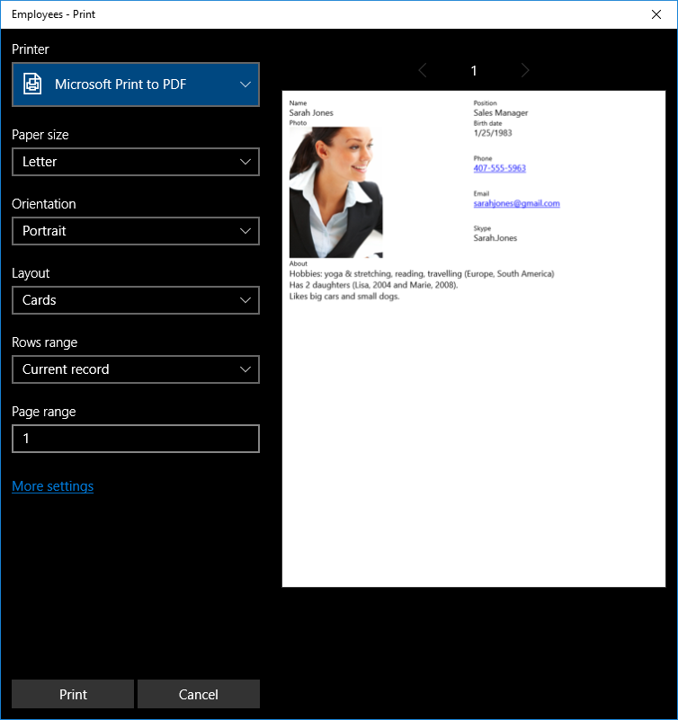
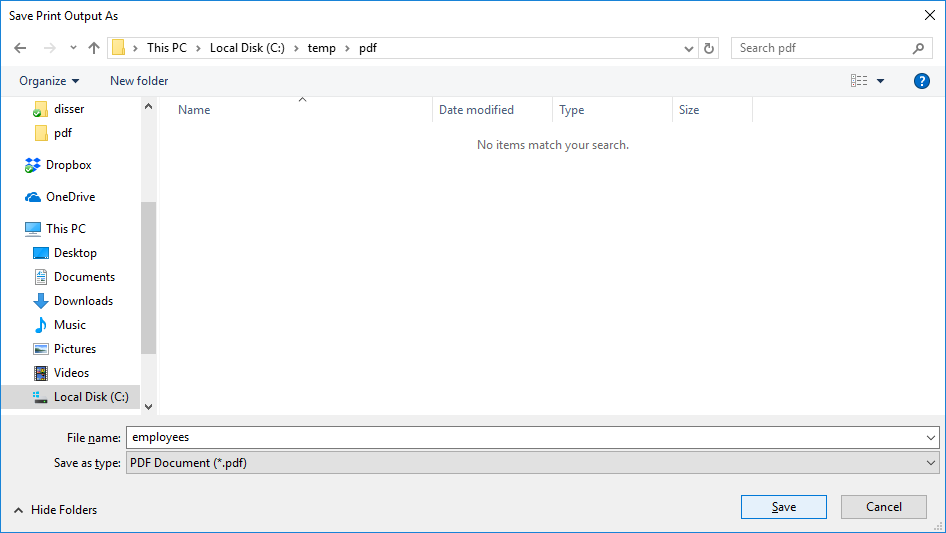
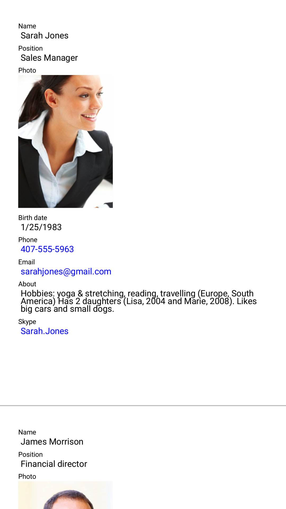
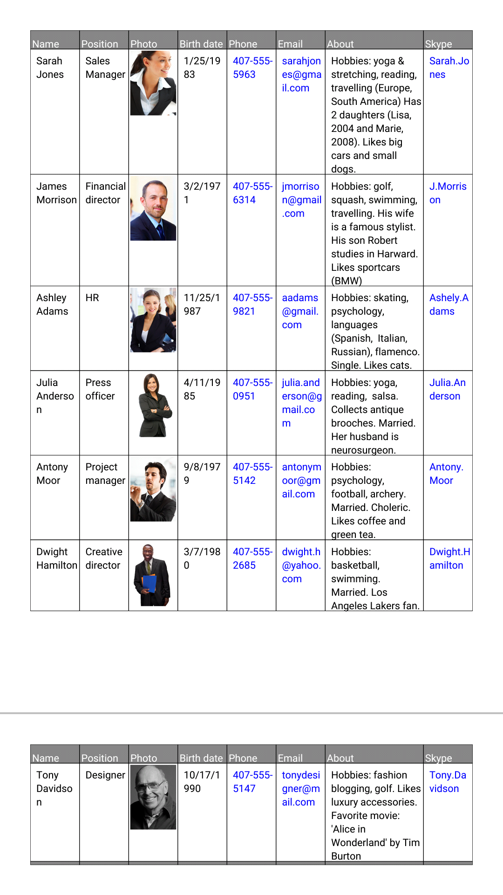

PDF export
MobiDB is powerful not only because of designer, but because you can export forms and table to PDF.
Android
For android platform pdf export is pretty straightforward: Open table you wish to export and press ellipses button:

Select Export option from the menu:

Then choose Pdf option in the list:

You will see pdf export settings dialog:

The following settings are available:
Font - font used by PDF export by default if not explicitly set in the designer.
Action after export - allows to add additional export step after saving the file like Send (using apps which support sending files) or Open (to view exported file in apps which are able to display PDF files). It is also possible to just export file without additional step.
Note
If you don't see text in the result PDF then default font you specified does not support characters you exported. You need to choose another default font or specify text field's font explicitly in the designer.
Windows
As for Windows there is no need to export PDF in order to get PDF. All you need to do is to print it. Windows 10 finally has default out of the box PDF Printer driver and is capable of creating PDF files.
In order to export document to PDF open desired table and press ellipses button:

In the menu choose Print option:

You'll see Print dialog:

As you can see Microsoft Print to PDF driver is selected by default. If not - choose it.
The following settings are available:
Page range - physical page range to print.
Once you hit Print you will see Save dialog:

Common Pdf export settings
There are several pdf export settings which work the same way for both platforms Android and Windows:
Page orientation – sets paper orientation portrait or landscape.
Layout – allows to specify which template to use for export: table view or forms view
Rows range – sets rows to export: All, Current record, Filtered records.
All - ignore filter, export all records.
Current record - export only one currently selected record.
Filtered rows - If you have active filter it will be used to filter rows).Page size - paper size (A4, Letter and etc.).
As for layout property Cards layout is demonstrated below:

Table layout example is shown below:
